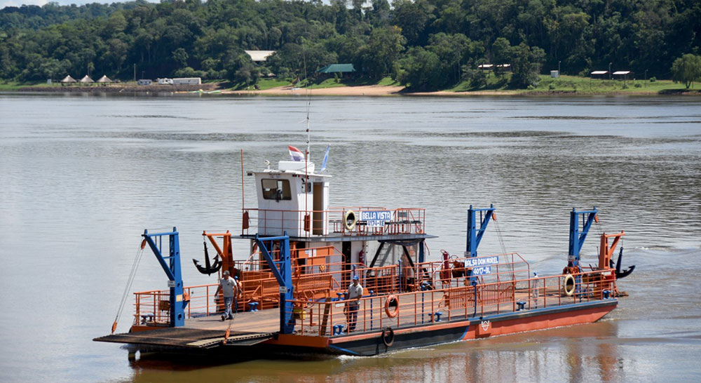
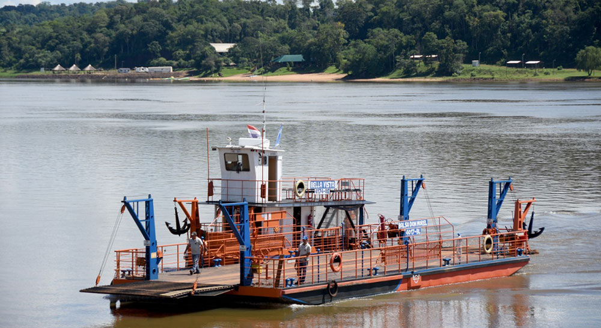
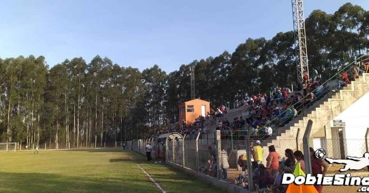
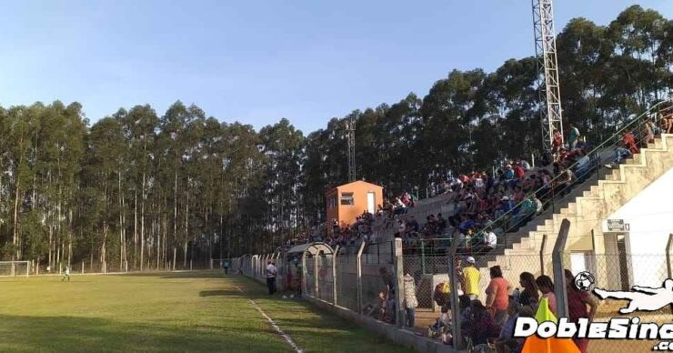

El Museo Histórico de Corpus Christi es un espacio dedicado a conservar, exhibir y difundir la historia y la cultura de la localidad.
Su colección incluye objetos antiguos, documentos, fotografías y herramientas que muestran la evolución de la ciudad, sus tradiciones y la vida cotidiana de sus habitantes a lo largo del tiempo.
El museo permite a los visitantes:
Conocer la historia local desde la fundación hasta la actualidad.
Observar objetos históricos y patrimonio cultural que reflejan la identidad de Corpus Christi.
Participar en actividades educativas y culturales organizadas por el museo.
Es un espacio que combina la preservación del pasado con la educación, ofreciendo a turistas y vecinos una experiencia enriquecedora sobre la historia y la identidad de la región.


El Centro de Interpretación de las Reducciones Jesuíticas de Corpus Christi es un espacio cultural y educativo que acompaña a las Ruinas Jesuíticas de la localidad.
Su objetivo es explicar y contextualizar la historia de las Misiones Jesuíticas Guaraníes, mostrando cómo se desarrolló la vida en las reducciones y cuál fue el legado cultural, social y religioso que dejaron en la región.
Dentro del centro, los visitantes pueden encontrar:
Exposiciones permanentes con objetos, mapas y material informativo.
Paneles explicativos y audiovisuales que permiten comprender la historia de las reducciones.
Información sobre la relación entre jesuitas y guaraníes, y la organización de la vida comunitaria en esa época.
Este espacio cumple un rol fundamental como complemento a la visita a las ruinas, ofreciendo al turista y a la comunidad un lugar de aprendizaje, memoria y valoración histórica.
Horarios y Acceso
Viernes, Sábados, Domingos y Feriados: de 9:00 a 18:00 hs.
Entrada libre y gratuita, incluyendo las visitas guiadas.


Este sitio corresponde a una de las Reducciones Jesuítico‑Guaraníes fundadas en la Región en el Siglo XVII.
Se encuentran en el municipio de Corpus Christi, Misiones, a pocos kilómetros del río Paraná
.Es un sitio ideal para quienes disfrutan de la Historia, la Arqueología y la Cultura Misionera.


El Balneario Curupaytí es un complejo recreativo ubicado en Corpus Christi, Misiones, que ofrece un predio de 24 hectáreas con un curso de agua encauzado en forma de pileta natural con puentes y trampolines.
Cuenta con servicios como parrillas, mesas, sillas, baños, quinchos, un salón de usos múltiples y un sector de camping. Además de la pileta semiolímpica y canchas de vóley y fútbol, el balneario es sede del Festival "Curupaytí le canta a la naturaleza", una fiesta convocante del verano.


El Puerto Maní es un lugar histórico de Corpus Christi, que en sus inicios funcionó como punto comercial y de comunicación con el río Paraná. Hoy se conserva como un espacio natural y cultural, donde vecinos y turistas disfrutan de caminatas, pesca y vistas panorámicas al río.
Representa un patrimonio histórico y cultural, reflejando la importancia del Paraná como vía de vida y desarrollo para la región.

 


Es el principal cruce internacional de frontera y zona primaria aduanera de la localidad de Corpus Christi, Misiones, que conecta con Puerto Bella Vista (Paraguay). Opera como un puerto fluvial donde una balsa-remolcador transporta personas y vehículos entre ambos países, y se utiliza como ruta alternativa para evitar el tráfico del puente Posadas-Encarnación.


El Centro de Pescadores y Cazadores de Corpus Christi es una de las instituciones más antiguas y representativas de la localidad. Ubicado a orillas del río Paraná, combina instalaciones sociales con el acceso directo al río, ideal para la pesca deportiva, la caza en temporadas habilitadas y los encuentros comunitarios.
Sus instalaciones incluyen sede social, quinchos, muelles y espacios de recreación, lo que lo convierte en un punto de encuentro social y cultural de gran valor para los habitantes y turistas.


 

El Estadio Municipal es el principal espacio deportivo de la localidad. Allí se desarrollan competencias de fútbol, encuentros escolares y actividades comunitarias que reúnen a los vecinos.
Además de ser sede de torneos locales y regionales, el estadio funciona como un punto de encuentro social, promoviendo el deporte y la integración entre jóvenes y familias.
Su importancia trasciende lo deportivo, ya que también es utilizado para eventos culturales, celebraciones populares y actos comunitarios, consolidándose como un lugar central en la vida social de Corpus Christi.